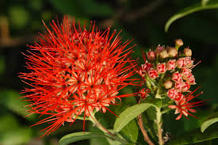

Combretaceae
White Mangrove / Indian Almond Family
Combretaceae is a large family of predominantly tropical and subtropical trees, shrubs, and lianas (woody vines), belonging to the order Myrtales. Members typically possess simple, entire leaves with variable arrangement (alternate, opposite, or whorled) and usually lack stipules. Their flowers, often borne in spikes, racemes, or heads, feature a distinct hypanthium (floral tube), are frequently apetalous (lacking petals), have an inferior ovary (usually 1-locular with apical ovules), and develop into characteristic fruits, which are often dry and winged (samaras) or fleshy drupes. The family includes ecologically important mangrove species (Laguncularia, Lumnitzera) and economically useful trees like Indian Almond (Terminalia catappa).
Overview
Combretaceae is a significant family within the order Myrtales (part of the Malvid clade of Rosids), containing about 11-18 genera and around 500 species. It has a wide pantropical and subtropical distribution, with centers of diversity in Africa and Asia, but also well-represented in the Neotropics and Australia. The family exhibits considerable habit diversity, including large trees, shrubs, and a large number of woody climbers (lianas), especially in the genus Combretum. Notably, it also includes several species adapted to saline coastal environments, forming important components of mangrove ecosystems (Laguncularia, Lumnitzera, Conocarpus).
Key characteristics unify this diverse group. Leaves are simple and usually entire-margined, but their arrangement (alternate, opposite, whorled) can vary even within a single genus. Stipules are generally absent or minute. Microscopically, unique compartmentalized hairs (combretaceous hairs) are often present. Flowers are typically 4- or 5-merous and are borne on a distinct floral tube or cup (hypanthium). Petals are often small or, very commonly, completely absent (apetalous). The stamens, usually twice the number of sepals (e.g., 8 or 10), are often long and project prominently from the flower. The ovary is consistently inferior and typically single-loculed with a few ovules hanging from the apex (apical placentation). The fruit is distinctive and diagnostic: usually a single-seeded, indehiscent fruit that is either dry and prominently winged (a samara or pseudo-samara adapted for wind or water dispersal) or a fleshy or leathery drupe.
Economically, Combretaceae provides valuable timber (Terminalia), edible fruits or nuts (Terminalia catappa - Indian Almond, Chrysobalanus icaco often included here in older classifications but now usually separate), tannins (from bark/fruits), and traditional medicines. Several species, especially from Combretum (including the former Quisqualis indica, Rangoon Creeper), are cultivated as ornamentals for their showy flowers or interesting fruits. No members are native to Oklahoma.
Quick Facts
- Scientific Name: Combretaceae R.Br.
- Common Name: White Mangrove / Indian Almond family
- Number of Genera: Approximately 11-18
- Number of Species: Approximately 500
- Distribution: Pantropical and subtropical worldwide.
- Evolutionary Group: Eudicots - Rosids (Malvids / Eurosids II) - Order Myrtales
Key Characteristics
Growth Form and Habit
Mostly woody plants: trees (small to large canopy), shrubs, or very commonly woody lianas (climbers). Includes specialized mangrove species adapted to intertidal saline habitats.
Leaves
Leaf arrangement is variable, often diagnostic at the generic level: alternate, opposite, or sometimes whorled. Leaves are simple, usually with entire margins (rarely slightly toothed or wavy). Petioles present or absent. Stipules are typically absent or minute and quickly falling (caducous). Microscopic unicellular hairs divided by transverse septa (combretaceous hairs) are characteristic of the family, often found on leaves or other surfaces. Pits or glands (domatia) may be present in vein axils on the underside.
Inflorescence
Inflorescences are diverse, often consisting of dense spikes, racemes, panicles, or sometimes condensed into globose heads. They are typically terminal or axillary. Flowers are usually subtended by bracts.
Flowers
Flowers are usually bisexual (perfect), but sometimes unisexual (plants then monoecious or dioecious). They are typically actinomorphic (radially symmetrical), usually 4- or 5-merous, and perigynous or epigynous with a well-developed hypanthium (floral tube) extending above the ovary.
- Calyx: Consists of 4 or 5 sepal lobes borne on the rim of the hypanthium, usually small and persistent.
- Corolla: Consists of 4 or 5 petals (if present), which are free, inserted on the hypanthium rim, often small and inconspicuous. Petals are frequently absent (apetalous) in many genera (Terminalia, Laguncularia, Conocarpus).
- Androecium: Stamens usually number twice the sepals, i.e., 8 or 10, typically arranged in two whorls (diplostemonous) and inserted inside the hypanthium. Sometimes only 4 or 5 stamens are present, or rarely numerous. Filaments are often long and extend well beyond the perianth (exserted). Anthers are typically dorsifixed and versatile (swinging freely). A nectar disk is often present at the base of the hypanthium, inside the stamens.
- Gynoecium: The ovary is consistently inferior (or appears so, being fused with and enclosed by the hypanthium). It is composed of 2-5 fused carpels but is typically functionally 1-locular due to the suppression or breakdown of septa. It contains few (usually 2-5, rarely up to 20) ovules which are pendulous from the apex of the locule (apical placentation). A single, simple, usually slender and elongated style arises from the ovary apex, terminating in a small, usually simple or capitate stigma.
Fruits and Seeds
The fruit is typically dry or fleshy, indehiscent, and contains a single seed. A very common fruit type is a dry, winged fruit (samara or pseudo-samara), where the wings (usually 2-5) are derived from the persistent hypanthium/calyx or develop as outgrowths of the ovary wall. These are adapted for wind or water dispersal. Alternatively, the fruit can be a fleshy or leathery drupe. The single seed lacks endosperm at maturity; the embryo is large, often with folded, coiled, or spirally twisted cotyledons.
Chemical Characteristics
The family is rich in tannins, especially ellagitannins, found in bark, leaves, and fruits, contributing to their use in tanning and traditional medicine. Triterpenes and flavonoids are also common. Some species accumulate aluminum. The unique combretaceous hairs are a structural characteristic.
Field Identification
Identifying Combretaceae often involves recognizing the woody habit, simple entire leaves (with variable arrangement), flowers with an inferior ovary borne on a hypanthium (often lacking petals), and especially the characteristic winged or drupaceous fruits.
Primary Identification Features
- Habit: Tree, shrub, or woody liana (many climbers).
- Simple, Entire Leaves: Margins smooth; arrangement alternate, opposite, or whorled.
- Stipules Absent or Minute: Unlike some related families (e.g., Rhizophoraceae).
- Flowers with Hypanthium: Floral parts attached to a tube above the ovary.
- Often Apetalous: Petals frequently absent or very small.
- Inferior Ovary: Ovary positioned below main floral whorls (within hypanthium).
- Ovary 1-locular, Apical Placentation: Single chamber with ovules hanging from top.
- Fruit Winged (Samara-like) or Drupe: Highly characteristic fruit types, usually 1-seeded.
- Tropical/Subtropical Distribution: Including mangrove habitats for some genera.
Secondary Identification Features
- Flowers often in spikes, racemes, or heads.
- Stamens usually 8 or 10, often long-exserted.
- Combretaceous hairs present (microscopic).
- Cotyledons often folded or coiled within seed.
Seasonal Identification Tips
- Year-Round: Habit and leaf characteristics (simple, entire, arrangement) are useful. Check for persistent winged fruits on tree/ground or characteristic drupes. Mangrove habitat is a strong clue for relevant genera.
- Flowering Season: Flowers appear seasonally, often showy in clusters (Combretum) or dense spikes (Terminalia, Laguncularia). Note absence/presence of petals and inferior ovary.
- Fruiting Season: Mature fruits (winged samaras or drupes) are highly diagnostic and visible after flowering.
Common Confusion Points
- Lythraceae (Crape Myrtle Family): Also in Myrtales, often opposite leaves, flowers with hypanthium. Differ in usually having conspicuous (often crumpled) petals, typically superior or semi-inferior ovary, and fruit usually a capsule.
- Onagraceae (Evening Primrose Family): Also in Myrtales, flowers with hypanthium and inferior ovary. Differ in typically having 4 petals and 8 stamens, often different leaf margins (toothed), and fruit usually a capsule or nutlet. Mostly herbs.
- Myrtaceae (Myrtle Family): Also in Myrtales, trees/shrubs often with opposite simple entire leaves. Differ in usually having pellucid leaf dots (aromatic), numerous conspicuous stamens, inferior ovary, and fruit typically a berry or capsule.
- Families with Winged Fruits: Many unrelated families have winged fruits (e.g., Aceraceae/Sapindaceae, Ulmaceae, Betulaceae). Combretaceae samaras are distinct, often with 2-5 wings derived from hypanthium/ovary wall, containing a single seed from an inferior ovary.
- Mangrove Species: Distinguish Combretaceae mangroves (Laguncularia, Lumnitzera, Conocarpus) from Rhizophoraceae (Red Mangroves - opposite leaves, prominent stipules, often prop roots, viviparous seedlings) and Avicenniaceae/Acanthaceae (Avicennia - Black Mangroves - opposite leaves, pneumatophores, different flowers/fruit).
Field Guide Quick Reference
Look For:
- Tree, Shrub, or Liana
- Simple, entire leaves (Alt/Opp/Whorled)
- Stipules absent/minute
- Flowers with Hypanthium
- Petals often absent or small
- Stamens often 8 or 10, exserted
- Ovary Inferior (1-locular, apical ovules)
- Fruit often Winged (Samara) or a Drupe
- Tropical/subtropical/mangrove habitats
Key Variations:
- Habit (Tree vs. Shrub vs. Liana vs. Mangrove)
- Leaf Arrangement
- Petals Present vs. Absent
- Fruit Type (Winged vs. Drupe)
- Number of wings on fruit (2-5)
Notable Examples
Combretaceae includes numerous ecologically important tropical trees and lianas, mangrove species, and some well-known ornamentals and useful plants.

Combretum species (incl. Quisqualis)
Bushwillows, Rangoon Creeper
A very large genus (~250 species) of mostly woody vines (lianas) and shrubs, found throughout the tropics. Often have opposite or whorled leaves. Flowers frequently showy, with petals, often in dense spikes or panicles (e.g., C. indicum - Rangoon Creeper, with flowers changing color). Fruit is characteristically a dry, indehiscent samara with 4 or 5 prominent wings.

Terminalia species (e.g., T. catappa)
Indian Almond, Tropical Almond
Another large genus (~200 species) of mostly large trees, pantropical. Leaves often alternate and clustered near branch tips, frequently turning red before falling. Flowers small, usually apetalous, borne in slender spikes. Fruit typically a fleshy or leathery drupe, sometimes flattened or slightly winged (T. catappa - Indian Almond, widely planted, edible seed). Includes important timber species.

Winged Fruits (Samaras)
Combretaceae Fruits
A common and diagnostic fruit type in Combretaceae, especially Combretum and Terminalia sections, is the winged samara or pseudo-samara. These dry, single-seeded fruits possess 2 to 5 prominent wings derived from the ovary wall or persistent hypanthium/calyx, aiding dispersal by wind or water.

Laguncularia racemosa
White Mangrove
A common mangrove species found along tropical and subtropical coasts of the Americas and West Africa. A shrub or tree with opposite, leathery, somewhat succulent leaves often bearing two salt glands at the petiole base. Flowers small, greenish-white, apetalous, in terminal/axillary spikes. Fruit a leathery, ribbed, somewhat fleshy drupe-like structure, exhibiting limited vivipary (seedling starts developing on parent tree).

Lumnitzera species
Black Mangrove (sometimes called)
A genus of mangrove trees and shrubs found in the Old World tropics (Indian Ocean, W Pacific). Leaves are alternate, fleshy, often clustered at tips. Flowers have petals (white, pink, or red) and are borne in terminal clusters. Fruit is a woody or corky, somewhat flattened drupe adapted for water dispersal. Possess knee-roots or pneumatophores sometimes.
Phylogeny and Classification
Combretaceae is a core member of the order Myrtales, situated within the Malvid clade of Rosids. This order is characterized by features such as opposite leaves (common but not universal), flowers with a hypanthium, inferior or semi-inferior ovaries (common), often numerous stamens, and included phloem in the vascular tissue.
Molecular phylogenetic studies place Combretaceae sister to the large clade comprising the families Lythraceae (Loosestrife family, including Pomegranates and Crape Myrtles) and Onagraceae (Evening Primrose family). This grouping (Combretaceae + (Lythraceae + Onagraceae)) is then typically sister to the massive family Myrtaceae (Myrtles, Eucalyptus). Together with other families like Melastomataceae and Vochysiaceae, they form the well-supported Myrtales order, which represents a significant radiation primarily of woody plants.
Position in Plant Phylogeny
- Kingdom: Plantae
- Clade: Angiosperms (Flowering plants)
- Clade: Eudicots
- Clade: Rosids (Malvids / Eurosids II)
- Order: Myrtales
- Family: Combretaceae
- (Phylogenetic Position: Sister to Lythraceae + Onagraceae within Myrtales)
Evolutionary Significance
Combretaceae represents a major evolutionary lineage within the Myrtales order:
- Radiation in Tropics: Successfully diversified into trees, shrubs, and especially numerous liana species across global tropical ecosystems.
- Adaptation to Mangrove Habitats: Independently evolved adaptations (along with unrelated families) to colonize saline intertidal zones, showcasing convergent evolution.
- Fruit Dispersal Mechanisms: Exhibits remarkable diversity in fruit morphology, particularly the repeated evolution of winged samara-like fruits adapted for wind and water dispersal, alongside fleshy drupes for animal dispersal.
- Floral Reduction: The frequent loss of petals (apetaly) represents a significant trend in floral evolution within the family, likely related to pollination syndromes (wind or specialized insects).
- Myrtales Phylogeny: Its position helps clarify relationships among major families within the Myrtales, particularly linking to Lythraceae and Onagraceae.